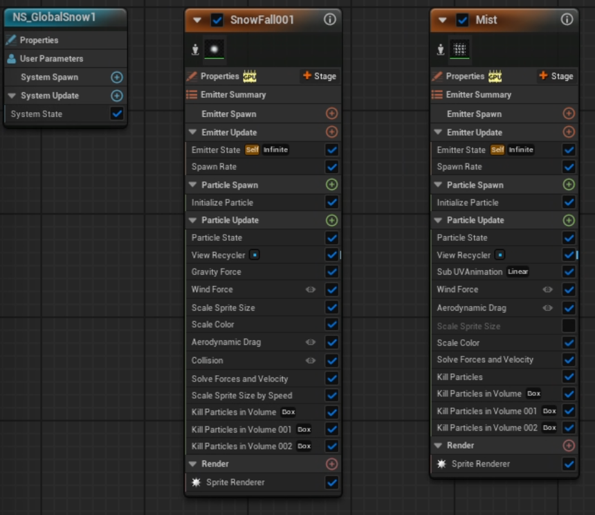
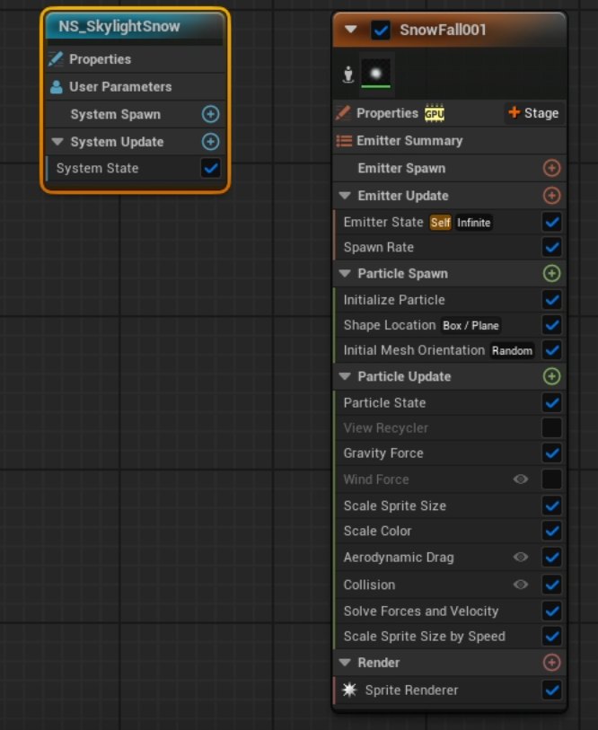
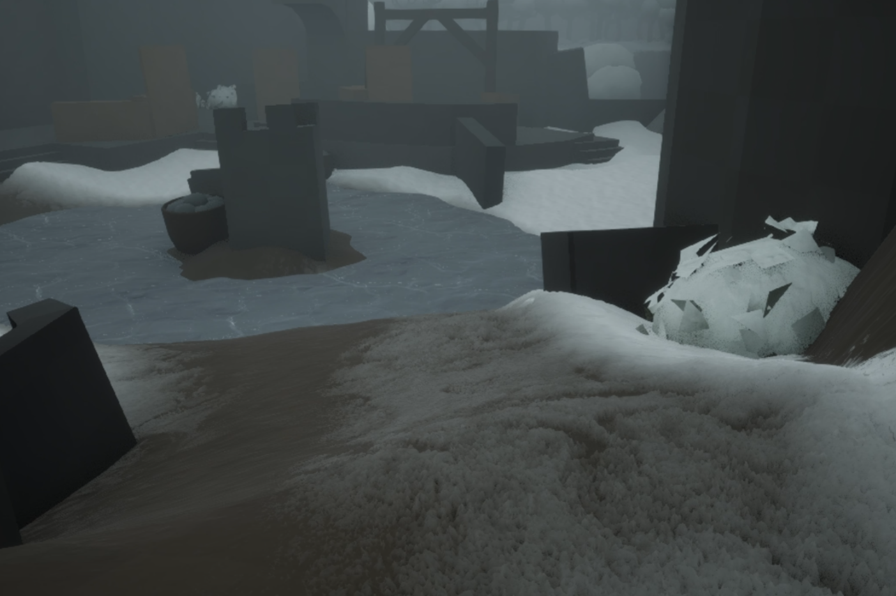
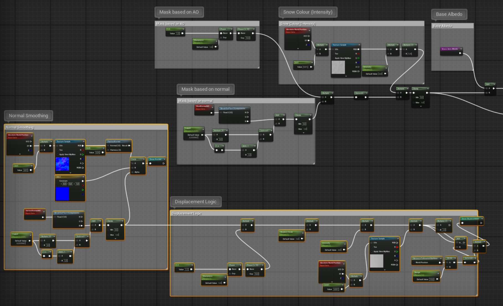

Shader Development
Snow VFX and Shaders
Gameplay footage of the winter environment
Project Overview
This project was a collabotation with Lukas Ax. You can find the summer version of the project on his website at lukasax.com/third-person-action.
For this project, I was responsible for making a winter environment with realistic snow VFX and shaders.
Snow effects
The main snow effect went through several iterations to achieve the desired look and performance. The final version utilizes viewport-based rendering for optimal performance and visual quality.
The snow particles are affected by wind and gravity, creating a natural-looking fall. Any developer can indrease or decrease the intensity of the wind and snow intensity with help of parameters.
A secondary mist effect was added to enhance the atmosphere and provide a secondary layer to the overall effect.
In order to avoid snow from falling indoors, I implemented a blueprint system to send the bounds of the indoor areas to the VFX system, ensuring that the snow only falls in the intended outdoor areas.
Preview of snow falling

Snow Niagara System
Snow fall effects were also created for the indoor areas using less influence of wind.
Preview of indoor snow falling

Indoor snow Niagara System
A mist effect was also added for use by the bridge area.
Preview of snow falling
Snow Niagara System
Snow Shader
Vertex and pixel normals are used to create realistic snow coverage.
In order to achieve realistic snow, displacement mapping is utilized to increase the height of the snow surface and simulate buildup. This project utilizes Unreal Engine's Nanite technology to get higher detail of displacement. Traditional tesselation may also be used instead (but may not provide as much detail)

Preview of snow material

Snow Material Graph
Challenges & Solutions
One of the main challenges was creating a snow falling effect that was both dense and optimized for performance. Initially, the snowfall was in world space, causing to lack density and to have poor performance. Changing the snowfall to be in the cameras frustum improved both density and performance.
Key Learnings
Irure ex ipsum ipsum sint elit minim culpa ea. Sint enim laboris ipsum non ut quis. Amet est non ex do sunt exercitation magna ex eu ad.